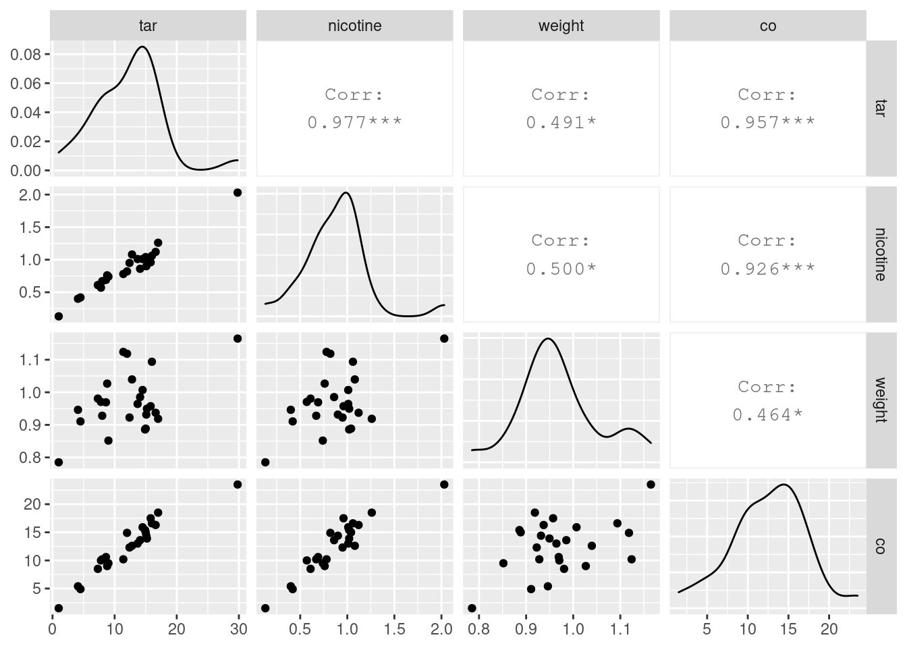
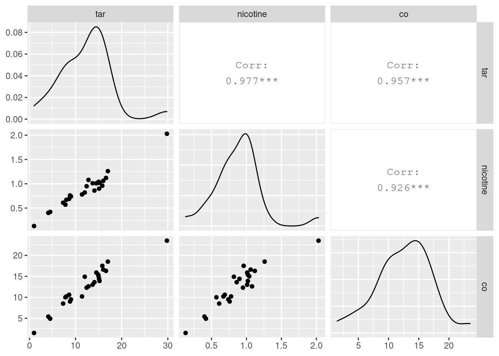
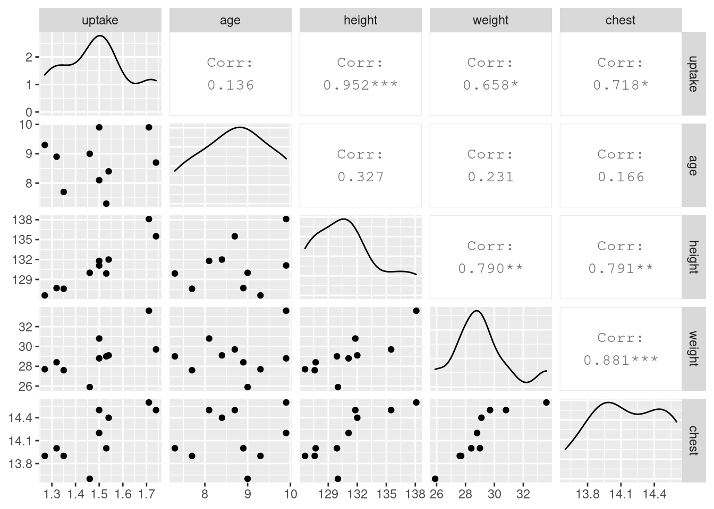
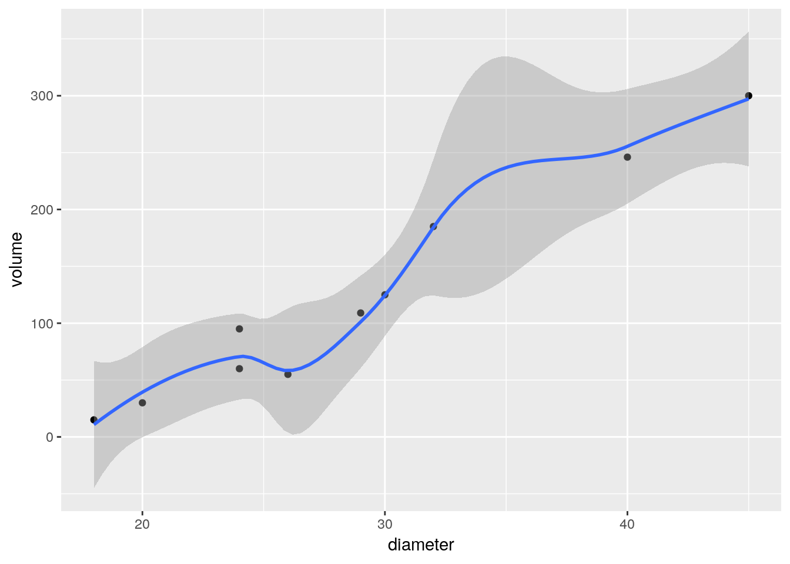
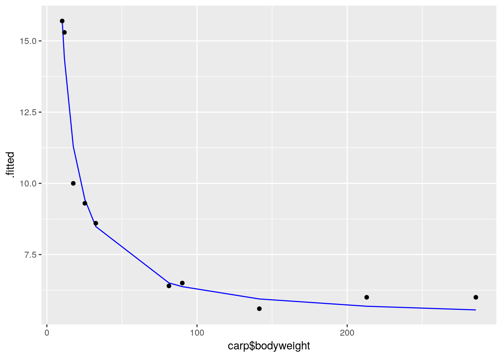
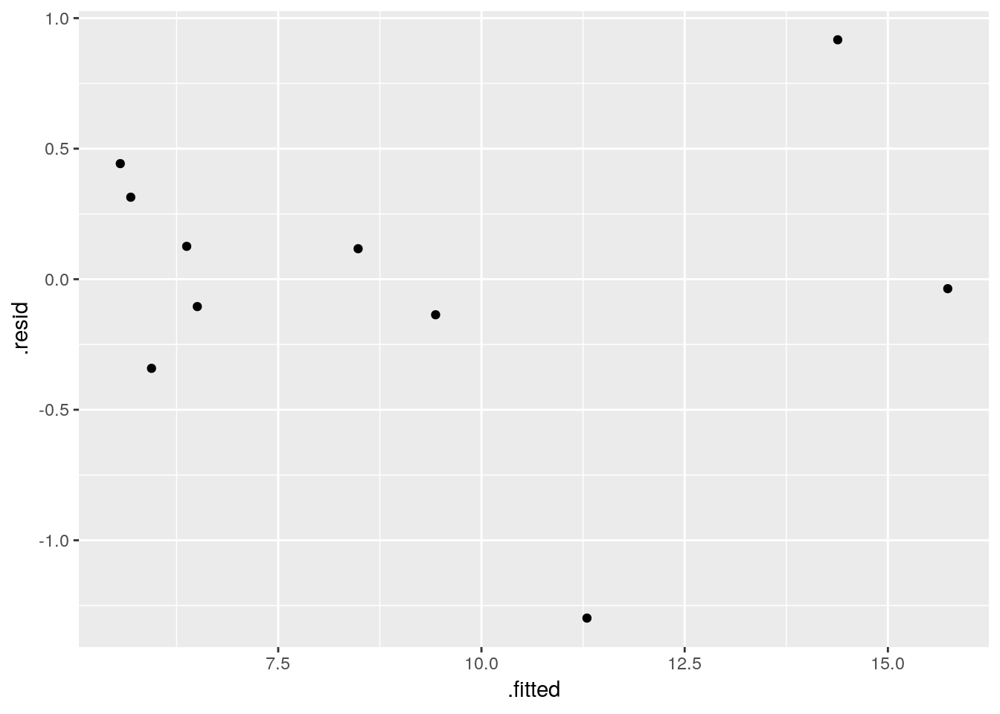
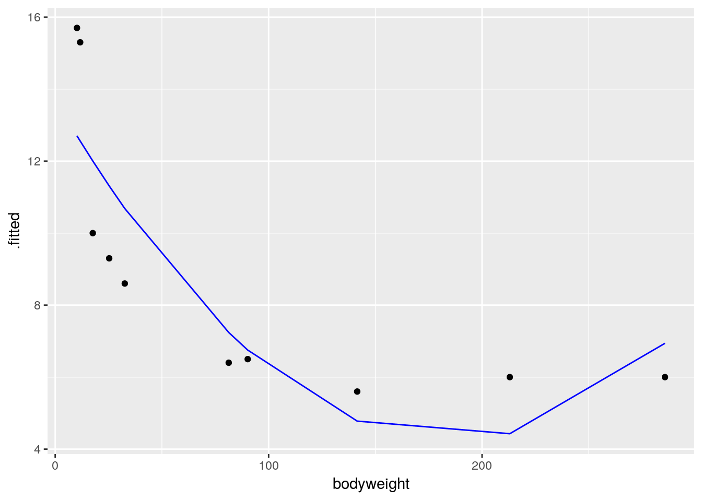

Chapter 14 The data
We begin by reading in the data, and loading in our usual stuff (for use later):
library(tidyverse)
my_url="http://www.utsc.utoronto.ca/~butler/c32/sparrowhawk.txt"
sparrowhawks=read_delim(my_url," ")## Parsed with column specification:
## cols(
## returning = col_integer(),
## newadults = col_integer()
## )## # A tibble: 13 x 2
## returning newadults
## <int> <int>
## 1 74 5
## 2 66 6
## 3 81 8
## 4 52 11
## 5 73 12
## 6 62 15
## 7 52 16
## 8 45 17
## 9 62 18
## 10 46 18
## 11 60 19
## 12 46 20
## 13 38 20There are xxx rows of data altogether.
We don't know how many rows of data there are yet, so I've left a
"placeholder" for it, when we figure it out.
The file is annoyingly called `sparrowhawk.txt`,
singular. Sorry about that.
If you knit this (click on "Knit HTML" next to the ball of wool,
or press control-shift-K), it should run, and you'll see a viewer
pop up with the HTML output. Now you can see how many rows there
are, and you can go back and edit the R Markdown and put in 13 in
place of `xxx`, and knit again.
You might be worried about how hard R is working with all this
knitting. Don't worry about that. R can take it.
Mine looked like this:

There is a better way of adding values that come from the output,
which I mention here in case you are interested (if you are not,
feel free to skip this). What you do is to make what is called an
"inline code chunk". Where you want a number to appear in the
text, you have some R Markdown that looks like this:
There are 13 rows altogether.
```
The piece inside the backticks is the letter r, a space,
and then one line of R code. The one line of code will be run, and
all of the stuff within the backticks will be replaced in the
output by the result of running the R code, in this case the
number 13. Typically, you are extracting a number from the data,
like the number of rows or a mean of something. If it’s a decimal
number, it will come out with a lot of decimal places unless you
explicitly round it.
OK, let me try it: the data frame has 13
rows altogether. I didn’t type that number; it was calculated from
the data frame. Woo hoo!
- Create a new section entitled “Exploratory analysis”, and create a scatterplot for predicting number of new adults from the percentage of returning adults. Describe what you see, adding some suitable text to your report.
Solution
The R code you add should look like this, with the results shown (when you knit the report again):
## `geom_smooth()` using method = 'loess' and formula 'y ~ x' The piece of report that I added looks like this:
```
14.0.1 Exploratory analysis
We should look at a scatterplot of the data, to see what, if any, relationship there is. We add a smooth trend, to guide the eye:
## `geom_smooth()` using method = 'loess' and formula 'y ~ x'
This seems to be something of a downward trend, though it is not completely convincing. That is, a larger percentage of returning adults is associated with a smaller number of new adults. Is the relationship straight? Well, the smooth trend has a strange wiggle in the middle, but the trend overall does not seem obviously curved.
```
Note (i) that you have to do nothing special to get the plot to appear, and (ii) that I put “smaller” in italics, and you see how.
- Obtain the correlation between the two variables. Is this
consistent with the scatterplot? Explain briefly. (The R function
you need is
cor. You can feed it a data frame.)
Solution
The appropriate R code is this, in another code chunk:
## [1] -0.7484673Or you can ask for the correlations of the whole data frame:
## returning newadults
## returning 1.0000000 -0.7484673
## newadults -0.7484673 1.0000000This latter is a “correlation matrix” with a correlation between each column and each other column. Obviously the correlation between a column and itself is 1, and that is not the one we want.
I added this to the report (still in the Exploratory Analysis section, since it seems to belong there):
```
What is the correlation between these two variables?
## [1] -0.7484673The correlation is about -0.75. This seems surprisingly close to -1 to me, since I didn’t think the trend was that strong, but it is no surprise that the correlation is negative, since the trend is definitely downward rather than upward.
```
- Obtain the regression line for predicting the number of new adults from the percentage of returning adults.
Solution
This R code, in another code chunk:
##
## Call:
## lm(formula = newadults ~ returning, data = sparrowhawks)
##
## Residuals:
## Min 1Q Median 3Q Max
## -5.8687 -1.2532 0.0508 2.0508 5.3071
##
## Coefficients:
## Estimate Std. Error t value Pr(>|t|)
## (Intercept) 31.93426 4.83762 6.601 3.86e-05 ***
## returning -0.30402 0.08122 -3.743 0.00325 **
## ---
## Signif. codes: 0 '***' 0.001 '**' 0.01 '*' 0.05 '.' 0.1 ' ' 1
##
## Residual standard error: 3.667 on 11 degrees of freedom
## Multiple R-squared: 0.5602, Adjusted R-squared: 0.5202
## F-statistic: 14.01 on 1 and 11 DF, p-value: 0.003248- What are the intercept and slope of your regression line? Is the slope significant? What does that mean, in the context of the data?
Solution
See the output in the previous part. That’s what we need to talk about. I added this to the report. I thought we deserved a new section here:
```
14.0.2 Regression analysis
The regression for predicting the number of new adults from the percentage of returning adults is as shown:
##
## Call:
## lm(formula = newadults ~ returning, data = sparrowhawks)
##
## Residuals:
## Min 1Q Median 3Q Max
## -5.8687 -1.2532 0.0508 2.0508 5.3071
##
## Coefficients:
## Estimate Std. Error t value Pr(>|t|)
## (Intercept) 31.93426 4.83762 6.601 3.86e-05 ***
## returning -0.30402 0.08122 -3.743 0.00325 **
## ---
## Signif. codes: 0 '***' 0.001 '**' 0.01 '*' 0.05 '.' 0.1 ' ' 1
##
## Residual standard error: 3.667 on 11 degrees of freedom
## Multiple R-squared: 0.5602, Adjusted R-squared: 0.5202
## F-statistic: 14.01 on 1 and 11 DF, p-value: 0.003248The intercept is about 32 and the slope is about -0.3. This means that each additional one percentage point in returning adults is associated with a decrease of approximately 0.3 new adults.
The P-value attached to the slope is about 0.003. This means that the slope is not zero, and that there is a significant association between the number of returning adults and the number of new adults. (This is despite the apparently weak trend, and the small number, 13, of data points.)
```
- Create a scatterplot of the data with the regression line on it.
Solution
This code. Using geom_smooth= withmethod"lm"
will add the regression line to the plot:

I added a bit of text to the report, which I will show in a moment.
- For short-lived birds, the association between these two variables is positive: changes in weather and food supply cause the populations of new and returning birds to increase together. For long-lived territorial birds, however, the association is negative because returning birds claim their territories in the colony and do not leave room for new recruits. Which type of species is the sparrowhawk? Add a short Conclusions section to your report with discussion of this issue.
Solution
My addition to the report looks like this:
```
A plot of the data with the regression line superimposed is as shown:

14.0.3 Conclusions
The association is negative, as seen from the scatterplot and correlation, and also from the negative slope of the regression line. This suggests that sparrowhawks are long-lived territorial birds rather than short-lived birds. We would expect to observe returning birds displaying territorial behaviour that would discourage new adults from joining the colony.
```
I think that rounds off the report nicely.
14.1 Salaries of social workers
Another salary-prediction question: does the number of years of work experience that a social worker has help to predict their salary? Data for 50 social workers are in http://www.utsc.utoronto.ca/~butler/c32/socwork.txt.
- Read the data into R. Check that you have 50 observations on two variables. Also do something to check that the years of experience and annual salary figures look reasonable overall.
Solution
## Parsed with column specification:
## cols(
## experience = col_integer(),
## salary = col_integer()
## )## # A tibble: 50 x 2
## experience salary
## <int> <int>
## 1 7 26075
## 2 28 79370
## 3 23 65726
## 4 18 41983
## 5 19 62308
## 6 15 41154
## 7 24 53610
## 8 13 33697
## 9 2 22444
## 10 8 32562
## # ... with 40 more rowsThat checks that we have the right number of observations; to
check that we have sensible values, something like
summary is called for:
## experience salary
## Min. : 1.00 Min. :16105
## 1st Qu.:13.50 1st Qu.:36990
## Median :20.00 Median :50948
## Mean :18.12 Mean :50171
## 3rd Qu.:24.75 3rd Qu.:65204
## Max. :28.00 Max. :99139A person working in any field cannot have a negative number of years of experience, and cannot have more than about 40 years of experience (or else they would have retired). Our experience numbers fit that. Salaries had better be five or six figures, and salaries for social workers are not generally all that high, so these figures look reasonable.
A rather more tidyverse way is this:
## # A tibble: 1 x 4
## experience_min salary_min experience_max salary_max
## <dbl> <dbl> <dbl> <dbl>
## 1 1 16105 28 99139This gets the minimum and maximum of all the variables. I would have
liked them arranged in a nice rectangle (min and max
as rows, the variables as columns), but that’s not how this comes out.
Here is another:
## # A tibble: 5 x 2
## experience salary
## <dbl> <dbl>
## 1 1 16105
## 2 13.5 36990.
## 3 20 50948.
## 4 24.8 65204.
## 5 28 99139These are the five-number summaries of each variable. Normally, they come with names attached:
## 0% 25% 50% 75% 100%
## 1.00 13.50 20.00 24.75 28.00but the names get lost in the transition to a tibble, and I
haven’t found out how to get them back.
If you haven’t seen map before: it says `do whatever is in the brackets for each column of the data frame''. This comes out as an Rlist, so we glue it back into a data frame with thebind_rows` on the end.
map and its single-value counterpart map_dbl are
actually very flexible: they run a function “for each” anything and
glue the results together, like this:
## experience salary
## 20.0 50947.5which gets the median for each variable. That’s the same thing as this:
## # A tibble: 1 x 2
## experience salary
## <dbl> <dbl>
## 1 20 50948.- Make a scatterplot showing how salary depends on experience. Does the nature of the trend make sense?
Solution
The usual:

As experience goes up, salary also goes up, as you would expect. Also, the trend seems more or less straight.
- Fit a regression predicting salary from experience, and display the results. Is the slope positive or negative? Does that make sense?
Solution
##
## Call:
## lm(formula = salary ~ experience, data = soc)
##
## Residuals:
## Min 1Q Median 3Q Max
## -17666.3 -5498.2 -726.7 4667.7 27811.6
##
## Coefficients:
## Estimate Std. Error t value Pr(>|t|)
## (Intercept) 11368.7 3160.3 3.597 0.000758 ***
## experience 2141.4 160.8 13.314 < 2e-16 ***
## ---
## Signif. codes: 0 '***' 0.001 '**' 0.01 '*' 0.05 '.' 0.1 ' ' 1
##
## Residual standard error: 8642 on 48 degrees of freedom
## Multiple R-squared: 0.7869, Adjusted R-squared: 0.7825
## F-statistic: 177.3 on 1 and 48 DF, p-value: < 2.2e-16The slope is (significantly) positive, which squares with our guess (more experience goes with greater salary), and also the upward trend on the scatterplot. The value of the slope is about 2,000; this means that one more year of experience goes with about a $2,000 increase in salary.
- Obtain and plot the residuals against the fitted values. What problem do you see?
Solution
The easiest way to do this with ggplot is to plot the
regression object (even though it is not actually a data
frame), and plot the .fitted and .resid
columns in it, not forgetting the initial dots:
 I see a “fanning-out”: the residuals are getting bigger in size
(further away from zero) as the fitted values get bigger. That
is, when the (estimated) salary gets larger, it also gets more
variable.
I see a “fanning-out”: the residuals are getting bigger in size
(further away from zero) as the fitted values get bigger. That
is, when the (estimated) salary gets larger, it also gets more
variable.
Fanning-out is sometimes hard to see. What you can do if you suspect that it might have happened is to plot the absolute value of the residuals against the fitted values. The absolute value is the residual without its plus or minus sign, so if the residuals are getting bigger in size, their absolute values are getting bigger. That would look like this:
## `geom_smooth()` using method = 'loess' and formula 'y ~ x'
I added a smooth trend to this to help us judge whether the absolute-value-residuals are getting bigger as the fitted values get bigger. It looks to me as if the overall trend is an increasing one, apart from those few small fitted values that have larger-sized residuals. Don’t get thrown off by the kinks in the smooth trend. Here is a smoother version:
## `geom_smooth()` using method = 'loess' and formula 'y ~ x'
The larger fitted values, according to this, have residuals larger in size.
The thing that controls the smoothness of the smooth trend is the
value of span in geom_smooth. The default is
0.75. The larger the value you use, the smoother the trend; the
smaller, the more wiggly. I’m inclined to think that the default value
is a bit too small. Possibly this value is too big, but it shows you
the idea.
- The problem you unearthed in the previous part is often helped by a transformation. Run Box-Cox on your data to find a suitable transformation. What transformation is suggested?
Solution
You’ll need to call in (and install if necessary) the package
MASS that contains boxcox:
##
## Attaching package: 'MASS'## The following object is masked from 'package:dplyr':
##
## selectI explain that “masked” thing below.

That one looks like \(\lambda=0\) or log. You could probably also justify fourth root (power 0.25), but log is a very common transformation, which people won’t need much persuasion to accept.
There’s one annoyance with MASS: it has a select
(which I have never used), and if you load tidyverse first
and MASS second, as I have done here, when you mean to run
the column-selection select, it will actually run the
select that comes from MASS, and give you an error
that you will have a terrible time debugging. That’s what that
“masked” message was when you loaded MASS.
So I’m going to be tidy and get rid of MASS, now that I’m
finished with it. Let’s first see which packages are loaded, rather a
lot in my case:
The packages before tidyverse other than MASS are all loaded by the tidyverse, which is why there are so many.
## [1] ".GlobalEnv" "package:MASS" "package:bindrcpp"
## [4] "package:forcats" "package:stringr" "package:dplyr"
## [7] "package:purrr" "package:readr" "package:tidyr"
## [10] "package:tibble" "package:ggplot2" "package:tidyverse"
## [13] "package:stats" "package:graphics" "package:grDevices"
## [16] "package:utils" "package:datasets" "package:methods"
## [19] "Autoloads" "package:base"then get rid of MASS:
Now check that it has gone:
## [1] ".GlobalEnv" "package:bindrcpp" "package:forcats"
## [4] "package:stringr" "package:dplyr" "package:purrr"
## [7] "package:readr" "package:tidyr" "package:tibble"
## [10] "package:ggplot2" "package:tidyverse" "package:stats"
## [13] "package:graphics" "package:grDevices" "package:utils"
## [16] "package:datasets" "package:methods" "Autoloads"
## [19] "package:base"It has. Now any calls to select will use the right one. We hope.
The output of search is called the search list, and
it tells you where R will go looking for things. The first one
.GlobalEnv is where all your
variables, data frames etc. get stored, and that is what gets
searched first. Then R will go
looking in each thing in turn until it finds what it is looking
for. When you load a package with library(), it gets added to
the list in second place, behind .GlobalEnv. So, when
we had MASS loaded (the first search()), if we
called select, then it would find the one in MASS
first.
If you want to insist on something like “the select that lives in dplyr”,
you can do that by saying
dplyr::select. But this is kind of cumbersome if you don’t
need to do it, which is why I got rid of MASS here.
- Calculate a new variable as suggested by your transformation. Use your transformed response in a regression, showing the summary.
Solution
The best way is to add the new variable to the data frame using
mutate, and save that new data frame. That goes like this:
and then
##
## Call:
## lm(formula = log_salary ~ experience, data = soc.2)
##
## Residuals:
## Min 1Q Median 3Q Max
## -0.35435 -0.09046 -0.01725 0.09739 0.26355
##
## Coefficients:
## Estimate Std. Error t value Pr(>|t|)
## (Intercept) 9.841315 0.056356 174.63 <2e-16 ***
## experience 0.049979 0.002868 17.43 <2e-16 ***
## ---
## Signif. codes: 0 '***' 0.001 '**' 0.01 '*' 0.05 '.' 0.1 ' ' 1
##
## Residual standard error: 0.1541 on 48 degrees of freedom
## Multiple R-squared: 0.8635, Adjusted R-squared: 0.8607
## F-statistic: 303.7 on 1 and 48 DF, p-value: < 2.2e-16I think it’s best to save the data frame with log_salary in
it, since we’ll be doing a couple of things with it, and it’s best to
be able to start from soc.2. But you can also do this:
##
## Call:
## lm(formula = log_salary ~ experience, data = .)
##
## Residuals:
## Min 1Q Median 3Q Max
## -0.35435 -0.09046 -0.01725 0.09739 0.26355
##
## Coefficients:
## Estimate Std. Error t value Pr(>|t|)
## (Intercept) 9.841315 0.056356 174.63 <2e-16 ***
## experience 0.049979 0.002868 17.43 <2e-16 ***
## ---
## Signif. codes: 0 '***' 0.001 '**' 0.01 '*' 0.05 '.' 0.1 ' ' 1
##
## Residual standard error: 0.1541 on 48 degrees of freedom
## Multiple R-squared: 0.8635, Adjusted R-squared: 0.8607
## F-statistic: 303.7 on 1 and 48 DF, p-value: < 2.2e-16The second line is where the fun starts: lm wants the data
frame as a data= at the end. So, to specify a data frame in
something like lm, we have to use the special symbol
., which is another way to say ``the data frame that came out
of the previous step’’.
Got that? All right. The last line is a piece of cake in
comparison. Normally summary would require a data frame or a
fitted model object, but the second line produces one (a fitted model
object) as output, which goes into summary as the first
(and only) thing, so all is good and we get the regression output.
What we lose by doing this is that if we need something later from this
fitted model object, we are out of luck since we didn’t save
it. That’s why I created soc.2 and soc.3 above.
You can also put functions of things directly into lm:
##
## Call:
## lm(formula = log(salary) ~ experience, data = soc)
##
## Residuals:
## Min 1Q Median 3Q Max
## -0.35435 -0.09046 -0.01725 0.09739 0.26355
##
## Coefficients:
## Estimate Std. Error t value Pr(>|t|)
## (Intercept) 9.841315 0.056356 174.63 <2e-16 ***
## experience 0.049979 0.002868 17.43 <2e-16 ***
## ---
## Signif. codes: 0 '***' 0.001 '**' 0.01 '*' 0.05 '.' 0.1 ' ' 1
##
## Residual standard error: 0.1541 on 48 degrees of freedom
## Multiple R-squared: 0.8635, Adjusted R-squared: 0.8607
## F-statistic: 303.7 on 1 and 48 DF, p-value: < 2.2e-16- Obtain and plot the residuals against the fitted values for this regression. Do you seem to have solved the problem with the previous residual plot?
Solution
As we did before, treating the regression object as if it were a data frame:

That, to my mind, is a horizontal band of points, so I would say yes, I have solved the fanning out.
One concern I have about the residuals is that there seem to be a couple of very negative values: that is, are the residuals normally distributed as they should be? Well, that’s easy enough to check:

The issues here are that those bottom two values are a bit too low, and the top few values are a bit bunched up (that curve at the top). It is really not bad, though, so I am making the call that I don’t think I needed to worry. Note that the transformation we found here is the same as the log-salary used by the management consultants in the backward-elimination question, and with the same effect: an extra year of experience goes with a percent increase in salary.
What increase? Well, the slope is about 0.05, so adding a year of experience is predicted to increase log-salary by 0.05, or to multiply actual salary by
## [1] 1.051271or to increase salary by about 5%.
14.2 Predicting volume of wood in pine trees
In forestry, the financial value of a tree is the volume of wood that it contains. This is difficult to estimate while the tree is still standing, but the diameter is easy to measure with a tape measure (to measure the circumference) and a calculation involving \(\pi\), assuming that the cross-section of the tree is at least approximately circular. The standard measurement is ``diameter at breast height’’ (that is, at the height of a human breast or chest), defined as being 4.5 feet above the ground.
Several pine trees had their diameter measured shortly before being cut down, and for each tree, the volume of wood was recorded. The data are in http://www.utsc.utoronto.ca/~butler/c32/pinetrees.txt. The diameter is in inches and the volume is in cubic inches. Is it possible to predict the volume of wood from the diameter?
- Read the data into R and display the values (there are not very many).
Solution
Observe that the data values are separated by spaces, and therefore
that read_delim will do it:
## Parsed with column specification:
## cols(
## diameter = col_integer(),
## volume = col_integer()
## )## # A tibble: 10 x 2
## diameter volume
## <int> <int>
## 1 32 185
## 2 29 109
## 3 24 95
## 4 45 300
## 5 20 30
## 6 30 125
## 7 26 55
## 8 40 246
## 9 24 60
## 10 18 15That looks like the data file.
- Make a suitable plot.
Solution
No clues this time. You need to recognize that you have two quantitative variables, so that a scatterplot is called for. Also, the volume is the response, so that should go on the \(y\)-axis:

You can put a smooth trend on it if you like, which would look like this:
## `geom_smooth()` using method = 'loess' and formula 'y ~ x'
I’ll take either of those for this part, though I think the smooth trend actually obscures the issue here (because there is not so much data).
- Describe what you learn from your plot about the relationship between diameter and volume, if anything.
Solution
The word “relationship” offers a clue that a scatterplot would have been a good idea, if you hadn’t realized by now. I am guided by “form, direction, strength” in looking at a scatterplot:You don’t need to be as formal as this, but you do need to get at the idea that it is an upward trend, apparently linear, and at least fairly strong.
- Fit a (linear) regression, predicting volume from diameter,
and obtain the
summary. How would you describe the R-squared?
Solution
My naming convention is (usually) to call the fitted model
object by the name of the response variable and a number. (I
have always used dots, but in the spirit of the
tidyverse I suppose I should use underscores.)
##
## Call:
## lm(formula = volume ~ diameter, data = trees)
##
## Residuals:
## Min 1Q Median 3Q Max
## -36.497 -9.982 1.751 8.959 28.139
##
## Coefficients:
## Estimate Std. Error t value Pr(>|t|)
## (Intercept) -191.749 23.954 -8.005 4.35e-05 ***
## diameter 10.894 0.801 13.600 8.22e-07 ***
## ---
## Signif. codes: 0 '***' 0.001 '**' 0.01 '*' 0.05 '.' 0.1 ' ' 1
##
## Residual standard error: 20.38 on 8 degrees of freedom
## Multiple R-squared: 0.9585, Adjusted R-squared: 0.9534
## F-statistic: 185 on 1 and 8 DF, p-value: 8.217e-07R-squared is nearly 96%, so the relationship is definitely a strong one.
I also wanted to mention the broom package, which was
installed with the tidyverse but which you need to load
separately. It provides two handy ways to summarize a fitted model
(regression, analysis of variance or whatever):
## # A tibble: 1 x 11
## r.squared adj.r.squared sigma statistic p.value df logLik AIC BIC
## * <dbl> <dbl> <dbl> <dbl> <dbl> <int> <dbl> <dbl> <dbl>
## 1 0.959 0.953 20.4 185. 8.22e-7 2 -43.2 92.4 93.4
## # ... with 2 more variables: deviance <dbl>, df.residual <int>This gives a one-line summary of a model, including things like R-squared. This is handy if you’re fitting more than one model, because you can collect the one-line summaries together into a data frame and eyeball them.
The other summary is this one:
## # A tibble: 2 x 5
## term estimate std.error statistic p.value
## <chr> <dbl> <dbl> <dbl> <dbl>
## 1 (Intercept) -192. 24.0 -8.01 0.0000435
## 2 diameter 10.9 0.801 13.6 0.000000822This gives a table of intercepts, slopes and their P-values, but the value to this one is that it is a data frame, so if you want to pull anything out of it, you know how to do that:
## # A tibble: 1 x 5
## term estimate std.error statistic p.value
## <chr> <dbl> <dbl> <dbl> <dbl>
## 1 diameter 10.9 0.801 13.6 0.000000822This gets the estimated slope and its P-value, without worrying about the corresponding things for the intercept, which are usually of less interest anyway.
- Draw a graph that will help you decide whether you trust the linearity of this regression. What do you conclude? Explain briefly.
Solution
The thing I’m fishing for is a residual plot (of the residuals against the fitted values), and on it you are looking for a random mess of nothingness:

Make a call. You could say that there’s no discernible pattern, especially with such a small data set, and therefore that the regression is fine. Or you could say that there is fanning-in: the two points on the right have residuals close to 0 while the points on the left have residuals larger in size. Say something.
I don’t think you can justify a curve or a trend, because the residuals on the left are both positive and negative.
My feeling is that the residuals on the right are close to 0 because these points have noticeably larger diameter than the others, and they are influential points in the regression that will pull the line closer to themselves. This is why their residuals are close to zero. But I am happy with either of the points made in the paragraph under the plot.
- What would you guess would be the volume of a tree of diameter zero? Is that what the regression predicts? Explain briefly.
Solution
Logically, a tree that has diameter zero is a non-existent tree, so its volume should be zero as well. In the regression, the quantity that says what volume is when diameter is zero is the intercept. Here the intercept is \(-192\), which is definitely not zero. In fact, if you look at the P-value, the intercept is significantly less than zero. Thus, the model makes no logical sense for trees of small diameter. The smallest tree in the data set has diameter 18, which is not really small, I suppose, but it is a little disconcerting to have a model that makes no logical sense.
- A simple way of modelling a tree’s shape is to pretend it is a cone, like this, but probably taller and skinnier:

with its base on the ground. What is the relationship between the diameter (at the base) and volume of a cone? (If you don’t remember, look it up. You’ll probably get a formula in terms of the radius, which you’ll have to convert. Cite the website you used.)
Solution
According to http://www.web-formulas.com/Math_Formulas/Geometry_Volume_of_Cone.aspx, the volume of a cone is \(V=\pi r^2h/3\), where \(V\) is the volume, \(r\) is the radius (at the bottom of the cone) and \(h\) is the height. The diameter is twice the radius, so replace \(r\) by \(d/2\), \(d\) being the diameter. A little algebra gives \[ V = \pi d^2 h / 12.\]
- Fit a regression model that predicts volume from diameter
according to the formula you obtained in the previous part. You can
assume that the trees in this data set are of similar heights, so
that the height can be treated as a constant.
Display the results.
Solution
According to my formula, the volume depends on the diameter squared, which I include in the model thus:
##
## Call:
## lm(formula = volume ~ I(diameter^2), data = trees)
##
## Residuals:
## Min 1Q Median 3Q Max
## -29.708 -9.065 -5.722 3.032 40.816
##
## Coefficients:
## Estimate Std. Error t value Pr(>|t|)
## (Intercept) -30.82634 13.82243 -2.23 0.0563 .
## I(diameter^2) 0.17091 0.01342 12.74 1.36e-06 ***
## ---
## Signif. codes: 0 '***' 0.001 '**' 0.01 '*' 0.05 '.' 0.1 ' ' 1
##
## Residual standard error: 21.7 on 8 degrees of freedom
## Multiple R-squared: 0.953, Adjusted R-squared: 0.9471
## F-statistic: 162.2 on 1 and 8 DF, p-value: 1.359e-06This adds an intercept as well, which is fine (there are technical difficulties around removing the intercept).
That’s as far as I wanted you to go, but (of course) I have a few comments.
The intercept here is still negative, but not significantly different from zero, which is a step forward. The R-squared for this regression is very similar to that from our linear model (the one for which the intercept made no sense). So, from that point of view, either model predicts the data well. I should look at the residuals from this one:

I really don’t think there are any problems there.
Now, I said to assume that the trees are all of similar height. This seems entirely questionable, since the trees vary quite a bit in diameter, and you would guess that trees with bigger diameter would also be taller. It seems more plausible that the same kind of trees (pine trees in this case) would have the same “shape”, so that if you knew the diameter you could predict the height, with larger-diameter trees being taller. Except that we don’t have the heights here, so we can’t build a model for that.
So I went looking in the literature. I found this paper: https://pdfs.semanticscholar.org/5497/3d02d63428e3dfed6645acfdba874ad80822.pdf. This gives several models for relationships between volume, diameter and height. In the formulas below, there is an implied “plus error” on the right, and the \(\alpha_i\) are parameters to be estimated.
For predicting height from diameter (equation 1 in paper):
\[ h = \exp(\alpha_1+\alpha_2 d^{\alpha_3}) \]
For predicting volume from height and diameter (equation 6):
\[ V = \alpha_1 d^{\alpha_2} h^{\alpha_3} \]
This is a take-off on our assumption that the trees were cone-shaped, with cone-shaped trees having \(\alpha_1=\pi/12\), \(\alpha_2=2\) and \(\alpha_3=1\). The paper uses different units, so \(\alpha_1\) is not comparable, but \(\alpha_2\) and \(\alpha_3\) are (as estimated from the data in the paper, which were for longleaf pine) quite close to 2 and 1.
Last, the actual relationship that helps us: predicting volume from just diameter (equation 5):
\[ V = \alpha_1 d^{\alpha_2}\]
This is a power law type of relationship. For example, if you were willing to pretend that a tree was a cone with height proportional to diameter (one way of getting at the idea of a bigger tree typically being taller, instead of assuming constant height as we did), that would imply \(\alpha_2=3\) here.
This is non-linear as it stands, but we can bash it into shape by taking logs:
\[\begin{equation} \ln V = \ln(\alpha_1)+ \alpha_2 \ln d \end{equation}\]so that log-volume has a linear relationship with log-diameter and we can go ahead and estimate it:
##
## Call:
## lm(formula = log(volume) ~ log(diameter), data = trees)
##
## Residuals:
## Min 1Q Median 3Q Max
## -0.40989 -0.22341 0.01504 0.10459 0.53596
##
## Coefficients:
## Estimate Std. Error t value Pr(>|t|)
## (Intercept) -5.9243 1.1759 -5.038 0.001 **
## log(diameter) 3.1284 0.3527 8.870 2.06e-05 ***
## ---
## Signif. codes: 0 '***' 0.001 '**' 0.01 '*' 0.05 '.' 0.1 ' ' 1
##
## Residual standard error: 0.3027 on 8 degrees of freedom
## Multiple R-squared: 0.9077, Adjusted R-squared: 0.8962
## F-statistic: 78.68 on 1 and 8 DF, p-value: 2.061e-05The parameter that I called \(\alpha_2\) above is the slope of this model, 3.13. This is a bit different from the figure in the paper, which was 2.19. I think these are comparable even though the other parameter is not (again, measurements in different units, plus, this time we need to take the log of it). I think the “slopes” are comparable because we haven’t estimated our slope all that accurately:
## 2.5 % 97.5 %
## (Intercept) -8.635791 -3.212752
## log(diameter) 2.315115 3.941665From 2.3 to 3.9. It is definitely not zero, but we are rather less sure about what it is, and 2.19 is not implausible.
The R-squared here, though it is less than the other ones we got, is still high. The residuals are these:

which again seem to show no problems. The residuals are smaller in size now because of the log transformation: the actual and predicted log-volumes are smaller numbers than the actual and predicted volumes, so the residuals are now closer to zero.
Does this model behave itself at zero? Well, roughly at least: if the diameter is very small, its log is very negative, and the predicted log-volume is also very negative (the slope is positive). So the predicted actual volume will be close to zero. (If you want to make that mathematically rigorous, you can take limits, but that’s the intuition.)
I mentioned broom earlier. We can make a data frame out of
the one-line summaries of our three models:
## # A tibble: 3 x 11
## r.squared adj.r.squared sigma statistic p.value df logLik AIC BIC
## <dbl> <dbl> <dbl> <dbl> <dbl> <int> <dbl> <dbl> <dbl>
## 1 0.959 0.953 20.4 185. 8.22e-7 2 -43.2 92.4 93.4
## 2 0.953 0.947 21.7 162. 1.36e-6 2 -43.8 93.7 94.6
## 3 0.908 0.896 0.303 78.7 2.06e-5 2 -1.12 8.25 9.16
## # ... with 2 more variables: deviance <dbl>, df.residual <int>(I mistakenly put glimpse instead of glance there
the first time. The former is for a quick look at a data frame,
while the latter is for a quick look at a model.)
The three R-squareds are all high, with the one from the third model being a bit lower as we saw before.
My code is rather repetitious. There has to be a way to streamline
it. I was determined to find out how. My solution involves putting the
three models in a list, and then using map to
get the glance output for each one, and bind_rows
to glue the results together into one data frame. I was inspired to
try this by remembering that map_df will work for a function
like glance that outputs a data frame:
## # A tibble: 3 x 11
## r.squared adj.r.squared sigma statistic p.value df logLik AIC BIC
## <dbl> <dbl> <dbl> <dbl> <dbl> <int> <dbl> <dbl> <dbl>
## 1 0.959 0.953 20.4 185. 8.22e-7 2 -43.2 92.4 93.4
## 2 0.953 0.947 21.7 162. 1.36e-6 2 -43.8 93.7 94.6
## 3 0.908 0.896 0.303 78.7 2.06e-5 2 -1.12 8.25 9.16
## # ... with 2 more variables: deviance <dbl>, df.residual <int>It works. You see the three R-squared values in the first column. The third model is otherwise a lot different from the others because it has a different response variable.
Other thoughts:
How might you measure or estimate the height of a tree (other than by climbing it and dropping a tape measure down)? One way, that works if the tree is fairly isolated, is to walk away from its base. Periodically, you point at the top of the tree, and when the angle between your arm and the ground reaches 45 degrees, you stop walking. (If it’s greater than 45 degrees, you walk further away, and if it’s less, you walk back towards the tree.) The distance between you and the base of the tree is then equal to the height of the tree, and if you have a long enough tape measure you can measure it.
The above works because the tangent of 45 degrees is 1. If you have a device that will measure the actual angle,.](https://gabrielhemery.com/2011/05/15/how-to-calculate-tree-height-using-a-smartphone}.) you can be any distance away from the tree, point the device at the top, record the angle, and do some trigonometry to estimate the height of the tree (to which you add the height of your eyes).